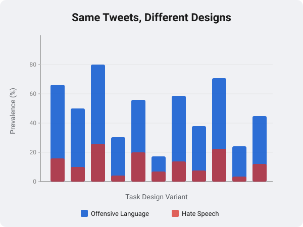
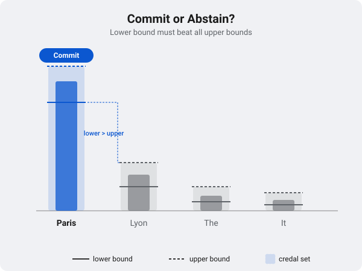
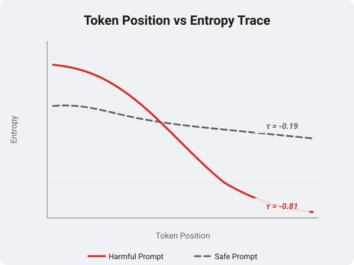

About
I am a M.Sc. student in Statistics and Data Science (Machine Learning track) at LMU Munich and a fellow of the Konrad Zuse School of Excellence in Reliable AI (relAI). My research is about building trustworthy AI systems - I work on AI safety, uncertainty quantification, and monitoring LLMs through their internal representations.
Currently, I am a research assistant at the SODA Lab (LMU Munich), where I work on understanding why LLM agents violate the rules they reason about.
Before graduate school, I was a data scientist at Kept (ex-KPMG), building RAG and information-security systems for the security team, and a solution engineer intern at Toloka.AI (Yandex). I am always happy to chat about research - feel free to reach out at sofiia.nikolenko@campus.lmu.de.
Research Interests
Building monitors and evaluations that reliably detect misaligned behavior, even when models recognize they are being tested.
How autonomous AI agents fail, and how to detect and prevent misaligned behavior in agentic systems.
Using uncertainty dynamics and internal representations as signals for detecting when what a model says differs from what it does.
News
- Sep 2026 Our paper Reliable but Design-Sensitive was accepted at the 3rd UncertaiNLP Workshop @ EMNLP 2026!
- Jul 2026 Started as a research assistant at the Data Analytics and Machine Learning Group at TUM, working on AI safety.
- Jul 2026 Contributed vision-language explanation support to shapiq — see the demo.
- Jun 2026 Our paper What Intermediate Layers Know was accepted at ECML PKDD 2026, with a short version at the EIML workshop @ ICML 2026!
- Dec 2025 Joined the SODA Lab at LMU Munich as a research assistant, working on AI safety through LLM alignment.
- Oct 2024 Selected as a fellow of the Konrad Zuse School of Excellence in Reliable AI.
Publications

Abstract
Large language models (LLMs) can give reliable labels under one setup yet change those labels when researchers make other reasonable design choices. We tested seven LLMs, 12 task designs, three independent runs, and 3,000 tweets labeled for offensive language and hate speech. Repeating the same model and task design produced high agreement (median Fleiss' κ = 0.91). Agreement fell when we changed the task design for the same tweets (median Cohen's κ = 0.76). Task design and model choice increased the variance of estimated prevalence by factors of 76.7 for offensive language and 110.6 for hate speech compared with sampling variance alone. We call the variation caused by task design and model choice instrument uncertainty. Researchers can measure it only by comparing reasonable task designs.
BibTeX
@inproceedings{reiter2026reliable,
title = {Reliable but Design-Sensitive: Instrument Uncertainty
in LLM Annotation},
author = {Reiter, Thomas and Kern, Christoph and Miasnikov, Fedor
and Nikolenko, Sofiia and Chew, Rob and Eckman, Stephanie
and Kreuter, Frauke},
booktitle = {3rd Workshop on Uncertainty-Aware NLP (UncertaiNLP)
at EMNLP 2026},
year = {2026},
eprint = {2609.35824},
archivePrefix = {arXiv}
}

Abstract
Large language models (LLMs) often produce fluent but incorrect answers with unwarranted confidence. A central limitation is that standard LLMs represent uncertainty through a single predictive distribution, conflating epistemic ignorance with genuine ambiguity. We introduce Credal Large Language Models (CLLMs): an ensemble of LoRA adapters induces a credal set whose lower and upper probabilities expose the spread of plausible predictive distributions rather than collapsing to a single softmax output. From this representation, we derive a single commitment rule: the model commits to an answer only when its lower probability exceeds the upper probability of every alternative, and otherwise returns the set of answers that no plausible predictor rules out.
BibTeX
@misc{manchingal2026credal,
title = {Credal Large Language Models for Semantic Commitment
under Uncertainty},
author = {Manchingal, Shireen Kudukkil and Nikolenko, Sofiia and
Cuzzolin, Fabio},
year = {2026},
eprint = {2608.23244},
archivePrefix = {arXiv},
primaryClass = {cs.CL}
}

Abstract
Jailbreak attacks reveal a persistent weakness in aligned Large Language Models: carefully crafted prompts can elicit policy-violating responses despite safety training. We investigate how harmful intent is encoded within the model's internal representations by analyzing token-level predictive entropy trajectories across layers using the logit lens. We find that features capturing how entropy evolves across token positions, such as monotonic rank-based trend scores, are substantially more informative than static aggregate statistics. This signal is concentrated in intermediate layers and degrades at the final layer. Across multiple models (Llama, Qwen, Gemma) and adversarial benchmarks, these entropy dynamics provide architecture-consistent separation without additional training.
BibTeX
@inproceedings{nikolenko2026intermediate,
title = {What Intermediate Layers Know: Detecting Jailbreaks
from Entropy Dynamics},
author = {Nikolenko, Sofiia and Papucci, Michele and
Rezaei, Mina and Manchingal, Shireen Kudukkil},
booktitle = {Joint European Conference on Machine Learning and
Knowledge Discovery in Databases},
pages = {313--329},
year = {2026},
organization = {Springer}
}